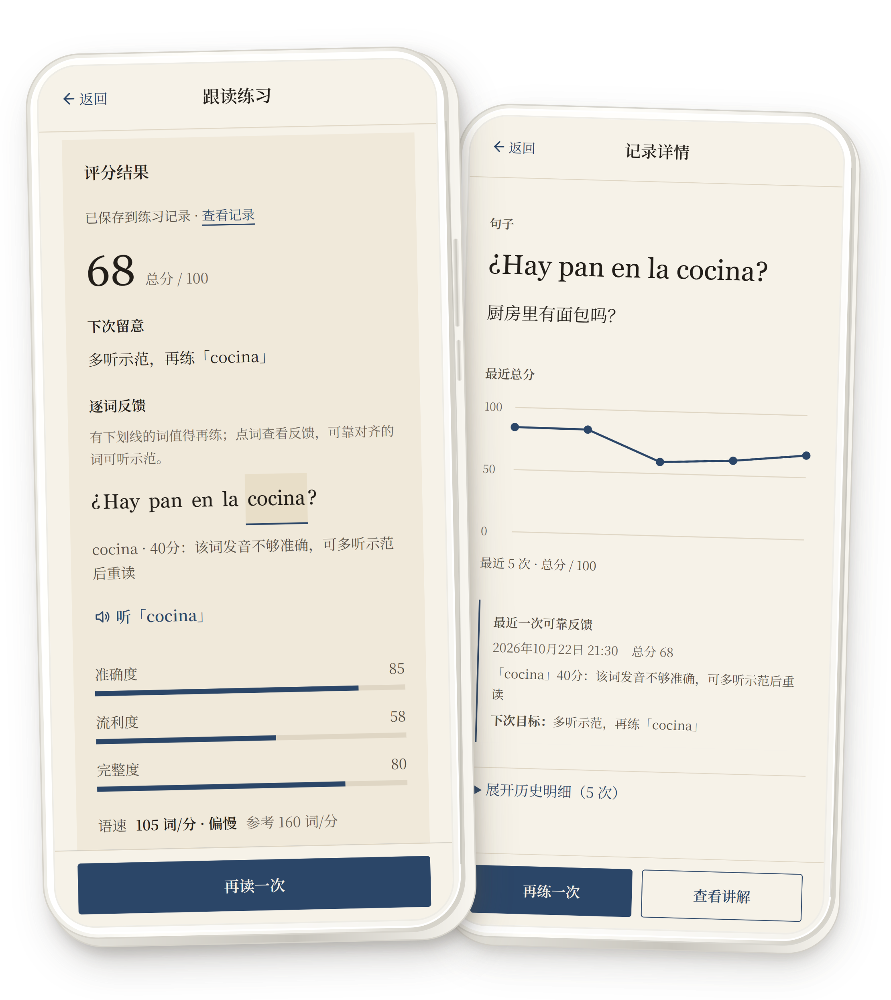
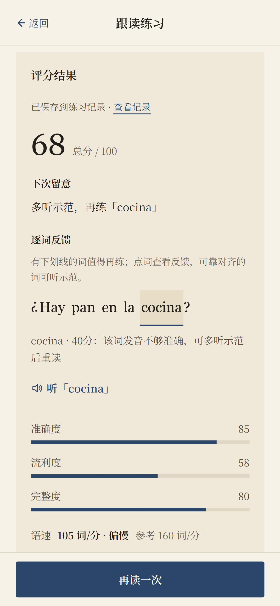
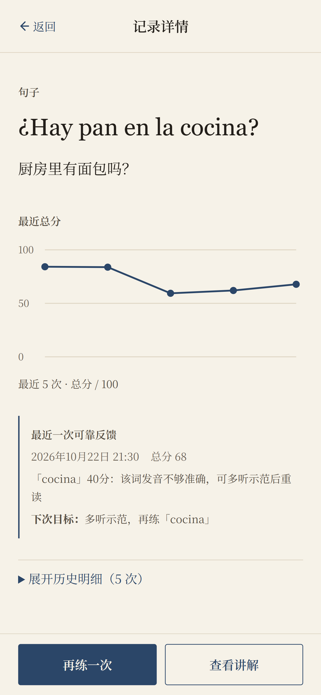

ONDA ESPAÑOL / FEEDBACK TO NEXT STEP
读完以后，
知道下一步怎么练。
练习结束后，系统不只给出一个分数，
而是把发音中的具体问题转化为下一步的
练习建议。从逐词反馈到后续目标，
让每一次练习都有明确的方向。


01 / WORD-LEVEL FEEDBACK
逐词反馈，不只给分。
清楚看到哪些词需要加强，并可针对该词收听示范，进行有针对性的练习。

02 / NEXT STEP
反馈会变成下一遍目标。
每次练习的结果会沉淀在记录中，并生成具体的下一步练习方向，让进步有迹可循。